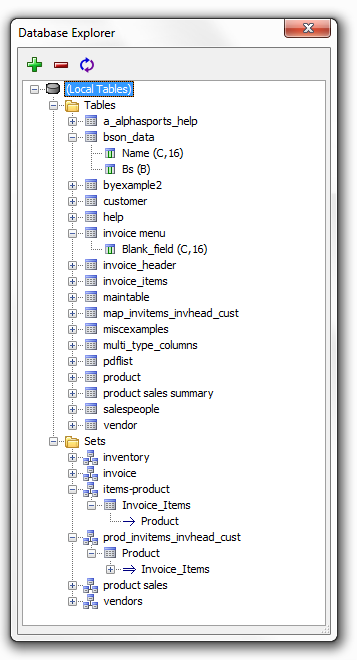
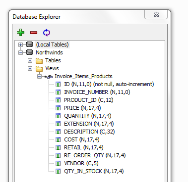

Database Explorer
Table of Contents
- Open the Database Explorer
- Add a Database to the Database Explorer listing
- Count Table Rows in a back-end SQL database table
- Create a Report, Label, or Letter Layout for a back-end SQL database table
- Create a Passive-Link Table based on a back-end SQL database table
- Create a SQL Expression by calling the SQL Command Window or SQL Genie
- Create an Alpha Anywhere .DBF Table with the data from a back-end SQL database table
- Display a Column's Data from a back-end SQL database table
- Display Data from a back-end SQL database table
- Generate SQL Syntax for a back-end SQL database table
- Open an Alpha Anywhere Layout for any Alpha Anywhere table or set
- Remove a Database from the Database Explorer listing
- Remove Tables or Views from the Database Explorer listing
- View an Alpha Anywhere Set's Structure for any Alpha Anywhere set
- View the properties of any table field
|
Open the Database Explorer
Display the Control Panel.
Select Tools > External Databases > Database Explorer.
-
You can also open Database explorer from the Web Projects Control Panel by Selecting Tools > Database Explorer.

The Database Explorer can display the contents of SQL back-end databases.
Right click on (Local Tables) and select Add database to explorer... .
Use the Connection String dialog to define the connection string that establishes the link to the back-end database.

The Database Explorer will display details about the fields of Tables, Views, and Linked Tables.
To remove a database from the Database Explorer, right click on it and select Remove database from explorer... .
To remove tables or views listed under a back-end database:
Right click on a back-end database and select Drop Table(s), View(s)... to display the Select Tables to Drop dialog.
Optionally, limit the tables or views listed by de-selecting the Tables, Views, Linked Tables, Synonyms, and Aliases check boxes.
Place checks to the left of the items you wish to drop.
Click OK to continue.
To create a passive-link table based on a back-end database table.
Expand a back-end database listing to display its tables.
Right click on a table and select Save as ... > Passive-link table.
Enter the new table name in the Specify Table Name dialog.
Click OK to continue.
Create an Alpha Anywhere .DBF Table
To create an Alpha Anywhere table from the data in a back-end database table.
Expand a back-end database listing to display its tables.
Right click on a table and select Save as ... > Alpha Anywhere (.dbf) table.
Enter the new table name in the Specify Table Name dialog.
Click OK to continue.
To count the rows of a back-end database table.
Expand a back-end database listing to display its tables.
Right click on a table and select Count rows in table.
To display the first 100 rows of a back-end database table.
Expand a back-end database listing to display its tables.
Right click on a table and select Show data in table.
To display the data in a column in the first 100 rows of a back-end database table.
Expand a back-end database listing to display its tables.
Expand a table to display its column definitions.
Right click on a column and select Show data in column.
To create and test a SQL expression for any of the attached databases:
Optionally, right click on a back-end database and select Open Query Builder to display the SQL Genie.
Optionally, right click on a back-end database and select Open SQL Command Window to display the SQL Command Window.
Copy the finished SQL statement for use in your application.
To create a layout based on the data in a back-end database table.
Expand a back-end database listing to display its tables.
Right click on a table and select Create Layout.
Select Report, Label, or Letter to display the Design-Time Properties dialog.
Enter the number of records to retrieve and click OK.
If you are creating a report, continue with Creating Reports.
If you are creating a label, continue with Create a Label Layout.
If you are creating a letter, continue with Letter Overview.
The Database Explorer can create SQL syntax for:
creating a table
inserting data into a table
deleting data from a table
updating data in a table
Expand a back-end database listing to display its tables.
Right click on a table and select SQL Syntax.
Select an option:
Create table
Insert statement
Delete statement
Update statement
Optionally, copy the code in the resulting window.
You can open any Alpha Anywhere layout:
Expand (Local Tables) to display the Alpha Anywhere tables and sets.
Right click on any table or set to select:
Default browse
Default form
Form, then any form layout
Browse, then any browse layout
Report, then any report layout
Label, then any label layout
Letter, then any letter layout
View an Alpha Anywhere Set's Structure
To view the structure, fields, and indexes of a set.
Expand (Local Tables) to display the Alpha Anywhere sets.
Right click on any set and select View set structure... to display the Set Information dialog.
View the properties of any table field
The Database Explorer lets you view the properties of any table field, i.e. basic schema information like field name, its type, and size. You can do this, for example, by right clicking on any given set and selecting 'Show Set Structure' from the dropdown. This should reveal the sets properties.

See Also
Create SQL Connection String Dialog